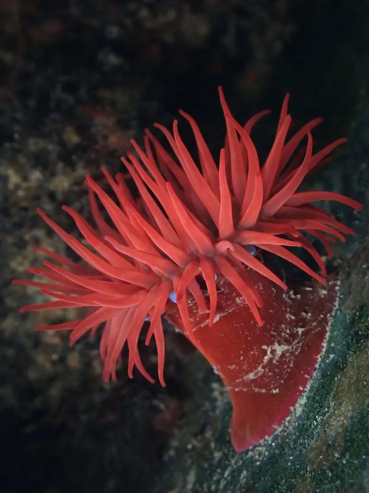

其他无脊椎动物 · 动物界
红肚海葵 Actinia equina

欧洲和大西洋沿岸潮间带的海葵，柱体呈深红色，退潮时缩成小球，触手带刺细胞，接触皮肤会刺痛。
- 分类
- 门刺胞动物门纲珊瑚纲目海葵目科海葵科属红海葵属
- 栖息环境
- 岩岸潮间带的潮池、岩石缝隙和码头桩柱
- 地理分布
- 欧洲大西洋沿岸、地中海和北非沿岸
- 保护级别
- IUCN 暂无评估；非中国原产
物种志
红肚海葵的柱体呈深红色、暗红色或褐红色，直径 3–7 厘米，触手短而粗，末端常带蓝色或紫色的环纹，总数可达上百条。退潮时它把触手缩进体内，身体变成一个红色的小球，紧贴在岩石上以保持水分。
它广泛分布于欧洲大西洋沿岸、地中海和北非的岩岸潮间带，生活在潮池、岩石缝隙和码头桩柱上，能耐受温度、盐度和干燥的变化。它以小鱼、小虾、蟹和浮游动物为食，触手上的刺细胞能麻痹猎物。红肚海葵既能进行有性繁殖，也能通过纵分裂产生新个体，部分个体还会在体内孵化幼体。它的刺细胞对人毒性较弱，但接触皮肤仍会刺痛和发红，观察时不要用手直接触摸。
形态与习性
- 体径柱体直径约 3–7 cm
- 食性小鱼、小虾、蟹和浮游动物
- 繁殖有性繁殖、纵分裂，部分个体体内孵化幼体
- 栖息潮间带潮池、岩石缝隙和码头桩柱
- 刺伤风险刺细胞可致皮肤刺痛发红，避免徒手触摸
- 耐受能耐受温度、盐度变化和退潮干燥
趣味知识
- 退潮时红肚海葵缩成一颗红色小球，把水分锁在体内。
- 它的触手末端常有蓝色环纹，与红色柱体形成对比。
- 红肚海葵的刺细胞对人毒性不强，但徒手触摸仍会刺痛。